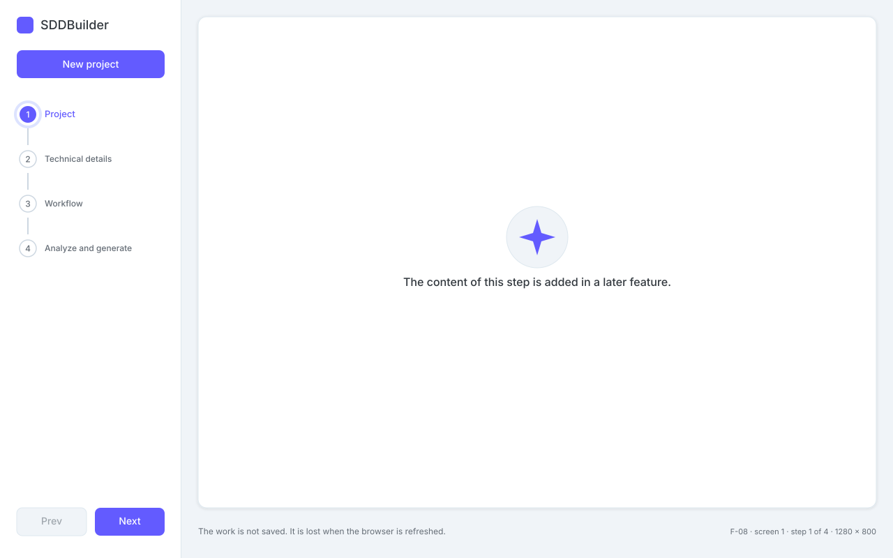
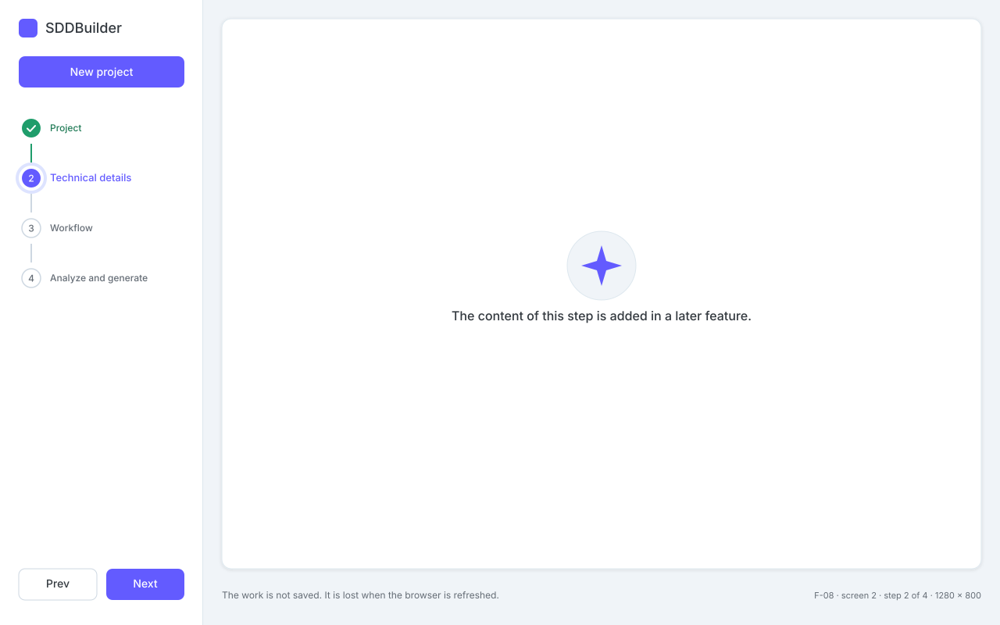
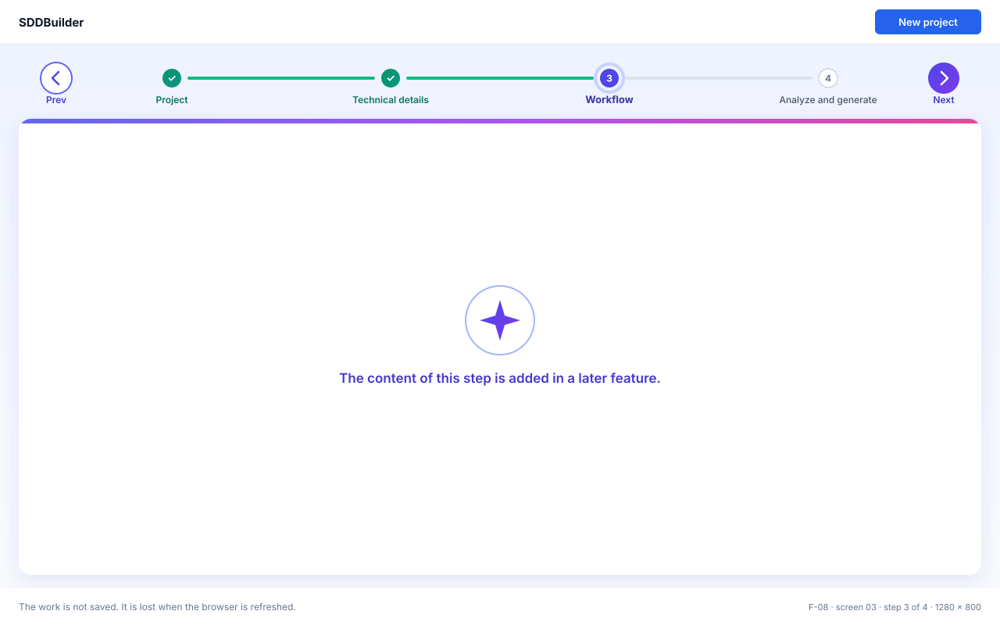
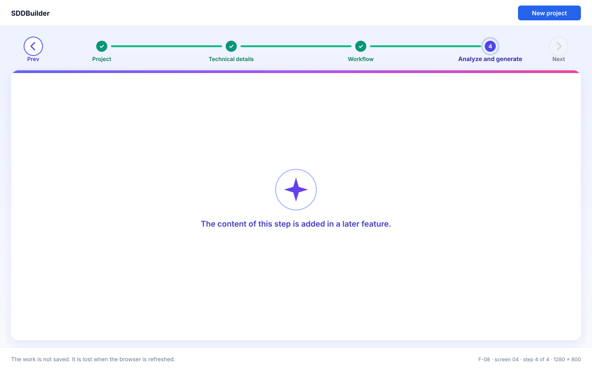

The wizard steps panel and the step body, one screen per step. Wireframes only; read screens.md.
Project is current, Prev is disabled, Next is shown.

Project is done, Technical details is current, Prev and Next are shown.

Project and Technical details are done, Workflow is current, Prev and Next are shown.

Steps 1 to 3 are done, Analyze and generate is current, Prev is shown, Next is hidden.
